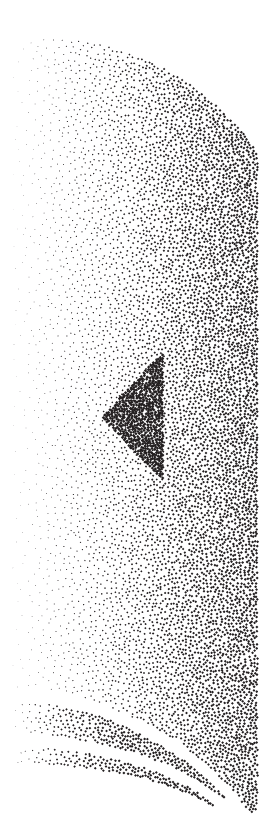

About 77
Tumblbug
How to visit

문서를 만들면서 자료를 일목요연하게 정리하고자 할 때는 표[table]를 이용합니다. 표의 각 칸들을 셀[cell]이라고 합니다.
셀은 표 편집의 기본 단위가 됩니다.
※ 모니터를 확인해보세요. [table-table]을 사용해서 표를 작성할 수 있습니다.
「표 만들기」, 『Hancom』,
http://help.hancom.com/hoffice/multi/ko_kr/hwp/table/table.htm
,
2019년 1월 31일 검색.
「표의 편집」, 『Hancom』,
http://help.hancom.com/hoffice/multi/ko_kr/hwp/table/table(edit).htm
,
2019년 1월 31일 검색.